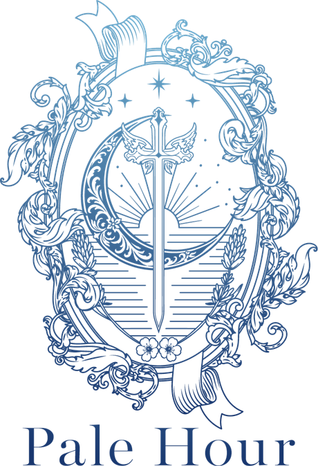

About
Pale Hourとは
Pale Hour——夜明け前の、青白く澄んだ光の時間。
まだ誰の声も届かない静かな時間に、自分の輪郭を取り戻していく。
そのための場所として、このブランドはあります。

Brand Story
彼に振り回される夜から、
私中心の朝へ。
返信が来ない夜。相手の機嫌で一日が決まる日々。
恋愛の中で自分を見失うことは、弱さではありません。
Pale Hourは、その夜の終わりから朝がはじまるまでの時間に寄り添い、「私はどうしたいか」を軸に戻すお手伝いをします。
Mission
恋愛を通して、女性が自分らしい人生を選べるよう支援する。
Philosophy
恋愛は、自分を知る入口。
恋愛で揺れるとき、そこにはいつも「自分の感情・境界線・思考の癖」が映っています。だからこそ恋愛は、自分を知るいちばん身近な入口になる。Pale Hourの提供するものはすべて、この考え方の上に組み立てられています。
Values
4つの価値
01
整える
感情を否定せず、心の土台を整える
02
気づく
自分の本音や、繰り返す恋愛の癖に気づく
03
選ぶ
誰かの正解ではなく、自分の意思で選ぶ
04
進む
恋愛の先のキャリアや人生まで整えていく
Profile
運営者紹介
プロフィールは現在準備中です。
SNSでは「しろもも」の名前で、恋愛と自分軸についての発信を行っています。